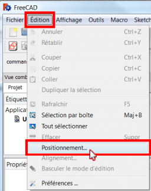

Descrizione
Placement (Posizionamento) è la funzione utilizzata da FreeCAD per specificare la localizzazione (dove si trova) e l'assetto (orientamento) di un oggetto nello spazio. Placement può essere specificato in diversi modi e manipolato tramite script, tramite la scheda delle Proprietà oppure il dialogo Placement del menu Modifica.
Accedere agli attributi di Placement
Gli attributi di Posizionamento di un oggetto sono accessibili in tre modi:
{kind=link}
{kind=link}
Il menu Modifica Posizionamento

{kind=link}
che apre e mostra lo strumento Azioni di Posizionamento.
{kind=link}
Tipi di posizionamento
Internamente il posizionamento viene memorizzato come una posizione, e una rotazione (asse di rotazione e angolo trasformati in un quaternione [1]). Sebbene ci siano diversi modi di specificare una rotazione, per esempio con un centro di rotazione, questo è usato solo per influenzare il calcolo della rotazione e non viene memorizzato per le operazioni successive. Allo stesso modo, se viene specificato un asse di rotazione (1,1,1), esso può essere normalizzato se conservato nel quaternione e in seguito apparire nella forma (0.58, 0.58, 0.58) durante l'esplorazione dell'oggetto
Angolo, Assi e Posizione
Placement=[Angle, Axis, Position]
La prima forma di Placement stabilisce la Posizione di un oggetto nello spazio e descrive il suo orientamento come una singola rotazione attorno ad un asse.
Angle = r : è uno scalare che indica la quantità di rotazione dell'oggetto su Axis. Inserito in gradi, ma memorizzato internamente in radianti.
Axis = (ax,ay,az) : è un vettore unitario che descrive un asse di rotazione (vedere Nota relativa all'asse di rotazione).
Esempi:
(1,0,0) ==> sull'asse X
(0,1,0) ==> sull'asse Y
(0,0,1) ==> sull'asse Z
(0.71,0.71,0) ==> sulla linea y=x
Position = (x,y,z) è un vettore che descrive il punto da cui sarà calcolata la geometria dell'oggetto (di fatto, una "origine locale" per l'oggetto). Notare che negli script, Placement.Base è usato per indicare il componente di Posizione di un Placement. Il Property Editor chiama questo valore "Position" e la finestra di dialogo Placement lo chiama "Traslazione".
Posizione con Imbardata, Beccheggio e Rollio
{kind=link}
Placement = [Position, Yaw-Pitch-Roll]
La seconda forma di Placement fissa la posizione di un oggetto nello spazio con Position (come nella prima forma), ma descrive il suo orientamento con gli angoli di imbardata, beccheggio e rollio. Questi angoli sono anche denominati angoli Tait-Bryan o angoli di Eulero. Imbardata, beccheggio e rollio sono termini comuni nel settore dell'aviazione per descrivere l'orientamento (assetto) del veicolo.
Position = (x,y,z) è un vettore che descrive il punto da cui sarà calcolata la geometria dell'oggetto (di fatto, una "origine locale" per l'oggetto).
Yaw-Pitch-Roll = (y,p,r) è una tupla che definisce l'assetto dell'oggetto. I valori di y, p, r, specificano i gradi di rotazione intorno agli assi z, y, x, vedere le Note.
>>> App.getDocument("Sans_nom").Cylinder.Placement=App.Placement(App.Vector(0,0,0), App.Rotation(10,20,30), App.Vector(0,0,0))
App.Rotation(10,20,30) = Angoli di Eulero
Yaw = 10 gradi (Z)
Pitch = 20 gradi (Y)
Roll = 30 gradi (X)

Angolo Psi ψ.

Angolo Phi φ.

Angolo Thêta θ.
Matrice
Placement = Matrix
La terza forma di Placement descrive la posizione dell'oggetto e l'orientamento con una matrice 4x4 di Trasformazione Affine.
Matrix =
((r11,r12,r13,t1), (r21,r22,r23,t2), (r31,r32,r33,t3), (0,0,0,1)) , dove rij specifica la rotazione e ti specifica la traslazione.
La finestra di dialogo Posizionamento
La finestra di dialogo Posizionamento viene richiamata dal menu Modifica. E' utilizzata per ruotare o traslare con precisione gli oggetti. E' anche usata quando si deve creare uno schizzo su un piano "non standard" o per modificare l'orientamento di un disegno in un nuovo piano.
La sezione Traslazione regola la posizione degli oggetti nello spazio.
La sezione Centro imposta singolarmente gli assi di rotazione che non passano attraverso il punto di riferimento dell'oggetto. La sezione Rotazione imposta l'angolo, o gli angoli di rotazione e il metodo per specificare tali angoli.
Selezionare la casella Applica le modifiche incrementali al posizionamento dell'oggetto è utile quando le traslazioni o le rotazioni devono essere effettuate rispetto alla posizione o all'assetto relativo corrente dell'oggetto, invece che rispetto alla posizione o all'assetto originale. Quando questa casella viene selezionata i valori dei campi di input della finestra di dialogo vengono reimpostati a zero, ma non si modifica l'orientamento dell'oggetto o la sua posizione. Successivi reimpostamenti modificano l'orientamento o la posizione, ma vengono applicati a partire dalla posizione corrente dell'oggetto.
Esempi
PS: poiché la versione 0.17 introduce una nuova parte dell'oggetto, questo oggetto ha il suo posizionamento e l'oggetto di posizionamento creato nell'oggetto Part viene incrementato con il Posizionamento del obietto Part. disponibile dalla versione 0.17
Per ottenere il piazzamento del obietto Part usa questo codice:
import Draft, Part sel = FreeCADGui.Selection.getSelection() print sel[0].Placement print sel[0].getGlobalPlacement() # return the GlobalPlacement print sel[0].getParentGeoFeatureGroup() # return the GeoFeatureGroup, ex: Body or a Part. print "____________________"
Esempio
Rotazione su un singolo asse:
Prima della rotazione (Vista dall'alto)
{kind=link}
Dopo la rotazione rispetto all'asse Z (Vista dall'alto)
Prima della rotazione rispetto a y=x (Vista da destra)
{kind=link}
{kind=link}
Rotazione con scostamento del punto centrale:
Prima della rotazione (Vista dall'alto)
{kind=link}
{kind=link}
Rotazione con impiego degli angoli di Eulero:
Prima della rotazione
Dopo la rotazione
{kind=link}
{kind=link}
Placement.Base vs Shape Definition
Placement non è l'unico modo per posizionare una forma nello spazio. Notare la console Python in questa immagine:
{kind=link}
Entrambi i cubi hanno lo stesso valore per il Placement, ma si trovano in luoghi diversi! Questo perché le due forme sono definite da differenti vertici (curve in forme complesse). Per le due forme della figura sopra:
>>> ev = App.ActiveDocument.Extrude.Shape.Vertexes >>> for v in ev: print v.X,",",v.Y,",",v.Z ... 30.0,30.0,0.0 30.0,30.0,10.0 40.0,30.0,0.0 40.0,30.0,10.0 40.0,40.0,0.0 40.0,40.0,10.0 30.0,40.0,0.0 30.0,40.0,10.0 >>> e1v = App.ActiveDocument.Extrude001.Shape.Vertexes >>> for v in e1v: print v.X,",",v.Y,",",v.Z ... 0.0,10.0,0.0 0.0,10.0,10.0 10.0,10.0,0.0 10.0,10.0,10.0 10.0,0.0,0.0 10.0,0.0,10.0 0.0,0.0,0.0 0.0,0.0,10.0 >>>
I Vertices (o Vectors) che definiscono la forma usano gli attributi Placement.Base per la loro origine.
Quindi, se si desidera spostare una forma di 10 unità lungo l'asse X, si può aggiungere 10 alla coordinata X di tutti i Vertices oppure è possibile impostare Placement.Base a (10,0,0).
Controllare l'asse di rotazione con Centro di Posizionamento
Per impostazione predefinita, l'asse di rotazione non è effettivamente l'asse x, y o z. Si tratta di una linea parallela all'asse selezionato che passa per il punto definito da Placement.Base dell'oggetto da ruotare. Questa impostazione può essere modificata utilizzando i campi Centro della finestra di dialogo Posizionamento oppure, negli script, utilizzando il parametro centre nella costruzione di FreeCAD.Placement.
Si supponga, ad esempio, di avere un cubo (figura sotto) posizionato in (20,20,10).
{kind=link}
Volendo ruotare il cubo attorno al proprio asse verticale (l'asse locale Z), mantenendolo nella stessa posizione. E' possibile ottenere facilmente questo specificando nei campi Centro un valore corrispondente alle coordinate del punto centrale del cubo (25,25,15).
{kind=link}
import FreeCAD obj = App.ActiveDocument.Box # our box rot = FreeCAD.Rotation(FreeCAD.Vector(0,0,1),45) # 45° about Z #rot = FreeCAD.Rotation(FreeCAD.Vector(1,0,1),45) # 45° about X and 45° about Z #rot = FreeCAD.Rotation(10,20,30) # here example with Euler angle Yaw = 10 degrees (Z), Pitch = 20 degrees (Y), Roll = 30 degrees (X) centre = FreeCAD.Vector(25,25,15) # central point of box pos = obj.Placement.Base # position point of box newplace = FreeCAD.Placement(pos,rot,centre) # make a new Placement object obj.Placement = newplace # spin the box
Alcuni script con i file di esempio: RotateCoG2.fcstd (discussion on the forum)
import FreeCAD obj = App.ActiveDocument.Extrude # our box rot = FreeCAD.Rotation(FreeCAD.Vector(0,0,1),45) # 45 about Z #rot = FreeCAD.Rotation(FreeCAD.Vector(1,0,1),45) # 45° about X and 45° about Z #rot = FreeCAD.Rotation(10,20,30) # here example with Euler angle Yaw = 10 degrees (Z), Pitch = 20 degrees (Y), Roll = 30 degrees (X) centre = FreeCAD.Vector(25,25,0) # "centre" of rotation (where local Z cuts XY) pos = obj.Placement.Base # original placement of obj newplace = FreeCAD.Placement(pos,rot,centre) # make a new Placement object obj.Placement = newplace # spin the box
Note
- Assi e Angolo possono anche essere espressi con un quaternione.
- Il punto di riferimento di un oggetto varia a seconda dell'oggetto. Alcuni esempi di oggetti di uso comune:
| Oggetto | Punto di riferimento |
|---|---|
| Part.Box | vertice sinistro (minimo x), frontale (minimo y), in basso (minimo z) |
| Part.Sphere | centro della sfera (centro del suo contenitore cubico) |
| Part.Cylinder | centro della faccia di base |
| Part.Cone | centro della faccia di base (o superiore se il raggio della faccia di base vale 0) |
| Part.Torus | centro del toro |
| Caratteristiche derivate da Sketch | la caratteristica eredita la posizione dello schizzo sottostante. Lo schizzo inizia sempre con Position = (0,0,0). |
Limitazioni
- A partire dalla versione 0.13, l'aggiornamento delle proprietà Placement nella scheda Dati è stato disattivato per gli oggetti creati con PartDesign, fatta eccezione per il disegno iniziale da cui il solido verrà creato.
Pertanto, il posizionamento di un solido creato in PartDesign da uno schizzo può essere modificato solo regolando i parametri di posizionamento del disegno di costruzione iniziale (il primo schizzo) da cui il solido viene creato.
- Le funzionalità di Posizionamento saranno eventualmente trattate nell'ambiente Assemblaggio.
Per saperne di più
- Il tutorial Aeroplano tratta ampiamente sul meccanismo di modifica dell'assetto di un oggetto.
- Una descrizione dettagliata della funzione Placement si trova nella pagina Azioni di Posizionamento.